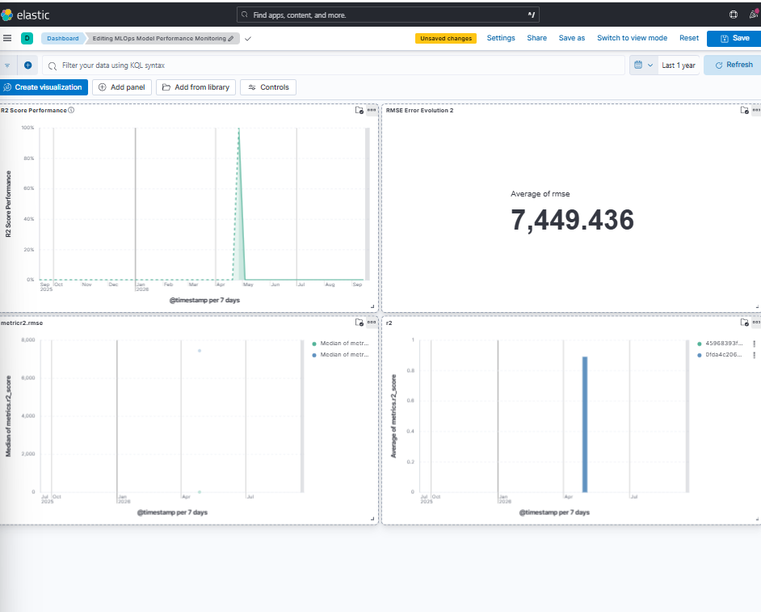

MLOps • Machine Learning • Model Monitoring
An end-to-end MLOps project designed to build, track and monitor a Machine Learning model for salary prediction based on years of experience. The project integrates Machine Learning, MLflow, Elasticsearch, Kibana, Docker and Git to create a complete and reproducible workflow.
The objective of this project is to develop a Machine Learning model capable of predicting salary based on years of experience. Beyond model training, the project focuses on the MLOps lifecycle by integrating experiment tracking, model management, metrics storage and monitoring.
The complete workflow combines a Machine Learning model with MLflow for experiment tracking and Elasticsearch + Kibana for monitoring model performance.
The project follows an end-to-end pipeline from data preparation to model monitoring.
Salary dataset preprocessing using Pandas followed by model training with Scikit-learn.
A Linear Regression model is trained using years of experience as the main predictive feature.
MLflow is used to track experiments, parameters, metrics and model artifacts.
Model performance metrics are stored in an Elasticsearch index for monitoring.
Kibana provides interactive dashboards for visualizing model performance metrics.
Docker and Docker Compose are used to run the monitoring infrastructure in isolated containers.
The complete workflow can be summarized as:
Salary_Data.csv ↓ Pandas preprocessing ↓ Train / Test Split ↓ Scikit-learn ↓ Linear Regression ↓ Model Evaluation ↓ MLflow Tracking ↓ Elasticsearch ↓ Kibana Dashboard
The project uses the Salary_Data.csv dataset containing salary information associated with years of professional experience.
30 observations
24 observations
6 observations
A Linear Regression model was implemented using Scikit-learn. The model learns the relationship between years of experience and salary.
After training, the model is evaluated on unseen test data using several regression metrics.
The model was evaluated using R², RMSE and MAE.
Coefficient of determination
Root Mean Squared Error
Mean Absolute Error
MLflow is integrated into the project to track Machine Learning experiments.
Salary_Prediction_Experiment
Parameters and evaluation metrics are tracked using MLflow.
The trained model is saved as model.pkl.
Model evaluation metrics are sent to Elasticsearch and visualized through Kibana. This makes it possible to monitor model performance through an interactive dashboard.
Stores model performance metrics in the mlflow-metrics index.
Provides interactive visualizations for R², RMSE and MAE.
The Kibana dashboard provides a visual overview of the model's performance metrics. Three main visualizations are included:

Docker and Docker Compose are used to containerize the monitoring infrastructure. This allows Elasticsearch and Kibana to run in isolated and reproducible environments.
Containerized search and metrics storage.
Containerized monitoring dashboard.
Orchestrates the MLOps services.
The complete source code, configuration files and documentation are available on GitHub.